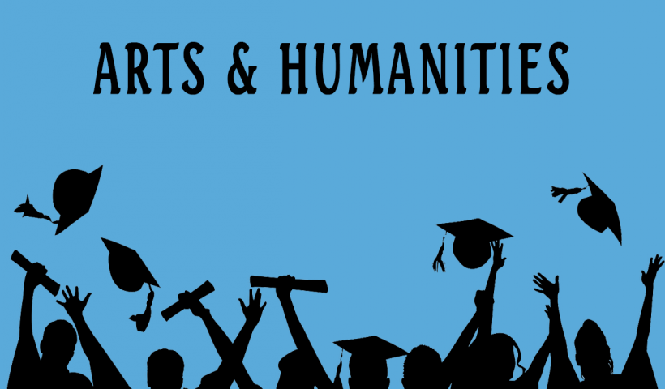

Explore Your Arts Stream Options
Further Education:
- Bachelor of Arts (B.A.) in Various Specializations: Offers a broad understanding of humanities subjects with options to specialize in areas like History, Sociology, Psychology, or Philosophy. This degree lays the foundation for a variety of careers, allowing students to develop critical thinking and analytical skills.
- Mass Communication and Journalism: Focuses on media studies, reporting, broadcasting, and digital journalism, preparing students for careers in media and communication industries. Students learn the ethics of journalism, news writing, and multimedia storytelling.
- Bachelor of Fine Arts (BFA): Concentrates on visual arts disciplines such as painting, sculpture, photography, and digital media, fostering both creative and technical skills. BFA programs often require a strong portfolio, leading to careers as professional artists or designers.
- Master of Arts (M.A.) in Specialized Fields: Advanced studies in specific areas like Literature, Cultural Studies, or Art History, enabling deeper academic and professional expertise. MA programs often involve research projects and thesis writing, preparing students for doctoral studies or specialized careers.
- Diploma in Creative Writing or Graphic Design: Short-term programs that provide practical skills and portfolio development in creative writing or graphic design, helping students build a competitive edge in their chosen fields.
- Postgraduate Diploma in Arts Management: Combines arts and business studies, preparing graduates to manage arts organizations, cultural institutions, and creative projects. This program equips students with skills in marketing, finance, and organizational leadership within the arts sector.
- Master of Fine Arts (MFA): A terminal degree focusing on the practice and theory of fine arts, often required for teaching positions in higher education. MFA programs typically require rigorous artistic output and critical engagement with the arts community.
- Doctor of Philosophy (Ph.D.) in Arts: Engages in extensive research and academic scholarship in various arts disciplines, leading to careers in academia and research institutions. PhD candidates often contribute original research to their fields and publish their findings.
Streams in Arts:
- Humanities: Focuses on subjects like History, Geography, Political Science, and Sociology, allowing students to explore societal structures and human behavior. This stream develops critical thinking and communication skills essential for careers in public service, law, and education.
- Fine Arts: Involves disciplines such as Painting, Sculpture, Music, and Performing Arts, encouraging creativity and artistic expression. Students often engage in both theoretical study and practical application, participating in exhibitions and performances.
- Design: Encompasses Graphic Design, Fashion Design, and Interior Design, blending creativity with functionality in various fields. Students learn design principles, software skills, and the business of design, preparing them for diverse career opportunities.
- Literature: Concentrates on English and regional literature, fostering skills in reading, writing, and critical analysis. Students explore diverse genres and historical contexts, developing their analytical and interpretive skills.
- Media Studies: Focuses on Journalism, Mass Communication, and Digital Media, preparing students for careers in media and communication. The curriculum often includes hands-on experience with digital content creation and understanding media ethics and law.
Specializations in Arts:
- Fine Arts: Focuses on traditional and contemporary visual arts, including painting, sculpture, and printmaking. Students learn techniques and develop personal styles, often showcasing their work in galleries.
- Performing Arts: Encompasses disciplines like theater, dance, and music, emphasizing performance skills and artistic expression. Programs may include stage production, choreography, and music composition.
- Graphic Design: Combines creativity with technology to create visual content for media, advertising, and digital platforms. Students learn about typography, color theory, and design software, preparing them for dynamic careers.
- Fashion Design: Involves designing clothing and accessories, understanding fabric selection, and keeping up with fashion trends. Courses often cover fashion illustration, pattern making, and merchandising.
- Film Studies: Covers film production, cinematography, screenwriting, and film theory, preparing students for careers in the film industry. Students may engage in hands-on projects and internships to build practical skills.
- Literature and Creative Writing: Focuses on writing, literary analysis, and developing a unique voice in fiction and non-fiction. Students often workshop their writing and may publish in literary magazines.
- Photography: Teaches technical skills in capturing and editing photographs, along with understanding visual storytelling. Programs often emphasize portfolio development and critique sessions.
Skills Needed for Arts:
- Creative Thinking: Ability to generate innovative ideas and approaches, essential for problem-solving in any artistic discipline.
- Analytical Skills: Critical thinking and ability to analyze complex texts and ideas, useful in both creative and academic settings.
- Communication Skills: Proficiency in verbal and written communication, crucial for presenting ideas and collaborating with others.
- Collaboration: Working effectively in teams and with diverse groups, particularly important in project-based environments.
- Time Management: Balancing multiple projects and deadlines efficiently, helping to meet the demands of academic and professional life.
- Technical Skills: Familiarity with tools and software relevant to specific fields (e.g., design software, editing tools), often essential for completing projects effectively.
- Attention to Detail: Precision in creative work and research, ensuring high-quality outputs in artistic endeavors.
- Adaptability: Ability to adjust to new trends and evolving industry standards, particularly in fast-changing fields like design and media.
Job Opportunities in Arts:
- Graphic Designer: Responsible for creating visual content for brands and companies, requiring strong design skills and creativity.
- Art Director: Oversees artistic aspects of projects, leading creative teams and ensuring alignment with clients' visions.
- Content Writer: Produces written content for various media, requiring strong writing skills and adaptability across topics.
- Journalist: Investigates and reports on news stories, often requiring strong research skills and adherence to ethical standards.
- Fashion Designer: Creates clothing and accessory designs, requiring an understanding of trends and production processes.
- Event Planner: Organizes events, requiring strong organizational skills and the ability to manage multiple vendors and details.
- Public Relations Specialist: Manages the public image of clients, requiring excellent communication and relationship-building skills.
- Social Media Manager: Curates and creates content for social media platforms, often requiring a blend of creativity and analytics.
- Film Producer: Oversees film production projects, requiring strong management skills and industry knowledge.
- Teacher/Professor in Arts Subjects: Educates and inspires students in various arts disciplines, often requiring advanced degrees and teaching credentials.
Career Growth in Arts:
- Entry-level positions may lead to mid-level roles with experience; many professionals start as interns or assistants before advancing.
- Networking and building a portfolio are crucial for career advancement; attending workshops, exhibitions, and industry events can help.
- Many professionals pursue further education or certifications to enhance their qualifications and stay competitive in the job market.
- Opportunities for freelancing and entrepreneurship are prevalent in arts fields; many artists and designers start their own businesses or work as independent contractors.
- Emerging fields such as digital marketing and content creation offer new pathways for arts graduates to explore diverse career options.
Emerging Trends in Arts:
- Increased focus on digital art and virtual reality experiences, reflecting technological advancements in the arts.
- Growing demand for interdisciplinary studies combining arts with technology, such as art and artificial intelligence.
- Rise of content creators and influencers in various media platforms, transforming traditional notions of authorship and audience engagement.
- Emphasis on sustainability in design and art practices, as artists and designers strive to minimize environmental impact.
- Increased accessibility of art through online platforms, expanding opportunities for artists to reach global audiences.
Professional Organizations:
- American Alliance of Museums: A national organization that supports museums and their work in education and cultural heritage.
- National Art Education Association: Focuses on promoting art education and providing resources for art educators.
- Graphic Artists Guild: Advocates for the rights and interests of graphic artists, offering resources and networking opportunities.
- Society of Professional Journalists: Promotes journalism ethics and provides resources for journalists across various media.
- International Association of Arts and Culture: Connects artists and cultural organizations globally, promoting collaboration and innovation.
- National Association of Schools of Art and Design: Sets standards for art and design education, offering accreditation to institutions.
Scholarships & Financial Aid:
- Various organizations offer scholarships for arts students based on merit or need, including private foundations and local organizations.
- Many universities have dedicated scholarships for students pursuing arts degrees, often requiring portfolios or specific essays.
- Government grants and loans may also be available for eligible students, with specific programs targeting arts and humanities students.
- Internships and work-study programs provide financial support while offering valuable experience in the arts sector.
- Competitions and grants from arts councils can provide funding for specific projects or creative endeavors.
Competitive Exams:
- National Eligibility Test (NET): For aspiring lecturers and researchers in Arts and Humanities, requiring extensive subject knowledge and research skills.
- Joint Entrance Examination (JEE) for Design: For students interested in pursuing design courses at reputed institutes, testing both creative and technical skills.
- Common Entrance Test (CET): Many states conduct CET for admissions into various arts and design colleges, assessing candidates on relevant subjects.
- UPSC Civil Services Exam: For those interested in administrative roles in public services with a background in arts, focusing on general studies and current affairs.
- State-level Examinations: Various states have their own competitive exams for admissions into local colleges for arts streams, often focusing on regional languages and subjects.
Back to Main Menu